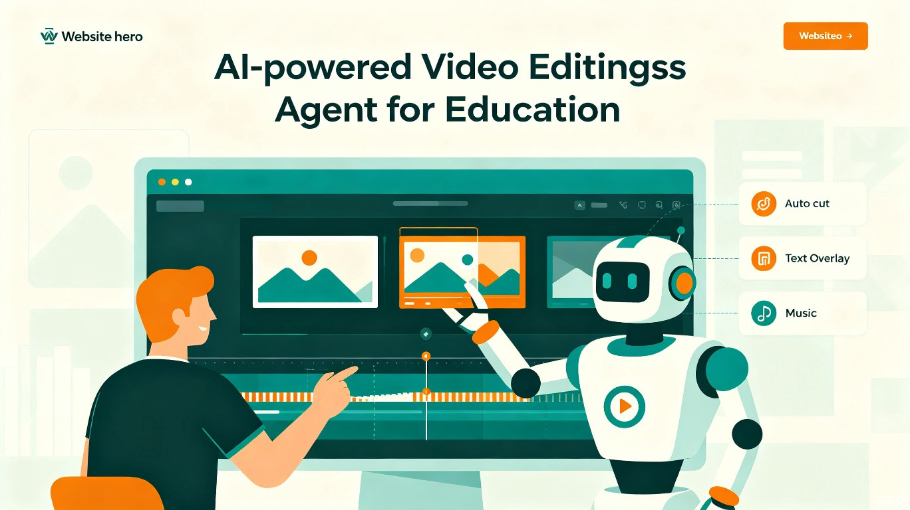
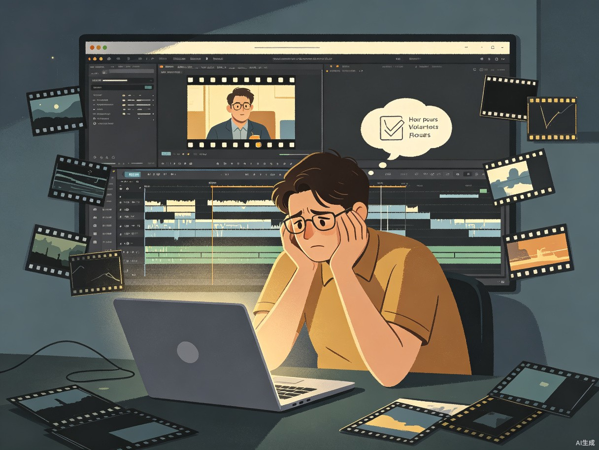
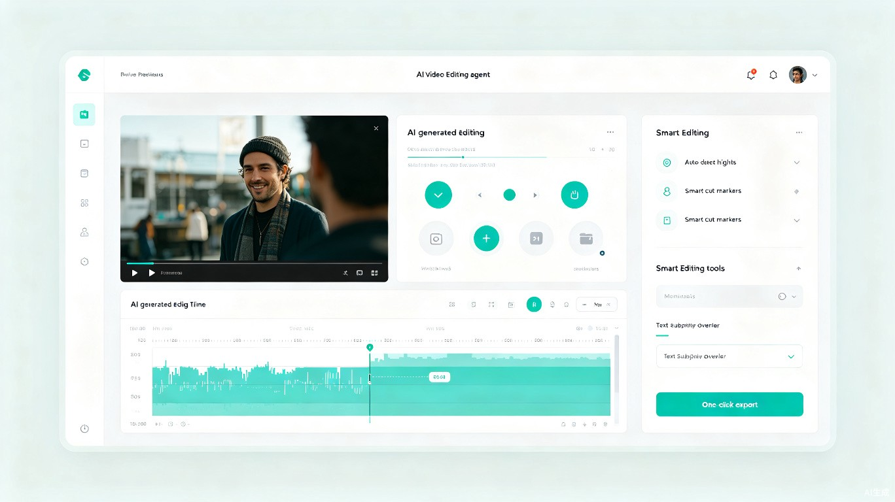

教育公平促进协会的志愿者录制了大量优质课程视频，但由于缺乏专业的视频剪辑能力和时间精力，这些视频往往未经剪辑就直接发布，导致内容冗长、重点不突出、观感差，严重影响课程的传播效果和覆盖范围。
在一次志愿课程观摩中，我发现一位资深教师录制了两小时的精彩授课，但由于没人会剪辑，视频迟迟无法上线。同时，AI 视频分析技术的成熟让我意识到，完全可以用智能 Agent来自动完成这一过程。
智剪 Agent是一款基于 AI 的自动视频剪辑 Web 应用，用户只需上传原始课程录像，Agent 即可自动识别教学内容结构、去除冗余片段、添加字幕与摘要，一键输出可直接传播的精剪课程视频。
采用 Whisper 语音识别 + LLM 内容理解 + FFmpeg 视频处理的流水线架构，通过 Agent 编排实现端到端自动化剪辑流程。
主要面向教育公平促进协会的志愿者教师及公益组织内容运营人员。这类用户通常具备扎实的学科知识和教学热情，但在视频后期制作方面技能有限，且时间资源紧张，难以投入大量精力学习专业剪辑工具。
大多数志愿者不熟悉 Premiere、剪映等专业工具，学习成本高
一节 90 分钟课程手动剪辑需要 3-5 小时，效率极低
缺乏专业剪辑导致视频结构混乱、重点模糊，影响学习体验

flowchart LR
A["📂 上传原始视频"] --> B["🎧 Whisper 语音转文字"]
B --> C["🤖 LLM 内容结构分析"]
C --> D["✅ 智能片段标记"]
D --> E["✂️ 自动剪辑合成"]
E --> F["📄 字幕/摘要生成"]
E --> G["🎥 一键导出成品"]
基于 Whisper 模型，支持多语种高精度语音识别，自动生成带时间戳的字幕文本
LLM 理解教学内容，自动识别章节切换、重点讲解、互动问答等关键段落
去除冗余片段（空白、口误、重复），保留核心内容，智能拼接输出流畅成品
自动生成可编辑字幕文件，提取课程摘要和知识点列表，辅助学习
支持设定剪辑偏好：目标时长、是否保留互动环节、开场/结尾模板等
协会管理员可批量分配剪辑任务，查看处理进度，统一审核发布

教育公平促进协会的志愿课程覆盖偏远地区和弱势群体。通过智剪 Agent 大幅降低课程视频的制作门槛，更多优质教学内容得以高质量传播。原本因剪辑难题而搁置的课程视频将重新焕发生命力，真正实现"录得好、剪得出、传得远"的良性循环。每一条被有效传播的课程视频，都可能改变一个孩子的学习轨迹。
原本需要数小时手动剪辑的工作，智剪 Agent 在几分钟内即可完成初剪。志愿者可以将节省下来的时间投入到教学准备和学生互动中，而非消耗在繁琐的视频后期制作上。效率的提升意味着课程产出量可提升 10 倍以上，让有限志愿力量产生更大社会效益。
智剪 Agent 不仅是工具，更是"AI + 公益"模式的实践样本。通过将前沿的 AI 技术（语音识别、大语言模型、视频处理）应用于教育公益场景，我们展示了技术如何降低公益行动的边际成本，让小规模公益组织也能享受数字化的红利。这种模式可复制到支教课堂录制、社区讲座剪辑、公益宣传视频制作等更多场景。
flowchart TB
subgraph Frontend["前端 (Web App)"]
UI["用户界面"]
UP["视频上传"]
CFG["剪辑配置"]
end
subgraph Agent["智剪 Agent 核心"]
AG["Agent 编排引擎"]
STT["Whisper 语音识别"]
NLP["LLM 内容分析"]
CUT["FFmpeg 智能剪辑"]
SUB["字幕生成模块"]
end
subgraph Backend["后端服务"]
API["RESTful API"]
QUEUE["任务队列"]
STORE["对象存储"]
DB["数据库"]
end
UI --> UP --> API
CFG --> AG
API --> QUEUE --> AG
AG --> STT --> NLP --> CUT
CUT --> SUB
CUT --> STORE
SUB --> STORE
STORE --> UI
DB --> AG
Whisper（语音识别）+ LLM（内容理解与决策）+ FFmpeg（视频处理），三层协同完成从原始视频到精剪成品的自动化转换。
基于大语言模型的 Agent 框架，负责任务规划、模型调用编排、异常处理和结果校验，实现灵活可控的自动化工作流。
扩展至少数民族语言和方言，服务更广泛的教育公平场景
开发小程序版本，志愿者在手机上即可完成上传和预览审核
根据内容标签和学习者画像，将剪辑后的课程智能推荐给目标受众